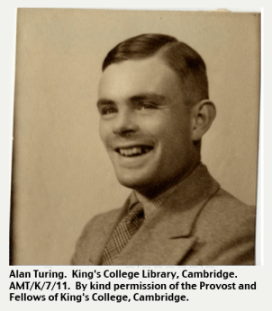

Home Ada Lovelace Charles Babbage Alan Turing
Alan Turing was an English mathematician, computer scientist, logician, cryptanalyst, philosopher, and theoretical biologist. Turing was highly influential in the development of theoretical computer science, providing a formalisation of the concepts of algorithm and computation with the Turing machine, which can be considered a model of a general-purpose computer. He is widely considered to be the father of theoretical computer science and artificial intelligence.
Although Turing's proof was published shortly after Alonzo Church's equivalent proof using his lambda calculus, Turing's approach is considerably more accessible and intuitive than Church's. It also included a notion of a 'Universal Machine' (now known as a universal Turing machine), with the idea that such a machine could perform the tasks of any other computation machine (as indeed could Church's lambda calculus). According to the Church–Turing thesis, Turing machines and the lambda calculus are capable of computing anything that is computable. John von Neumann acknowledged that the central concept of the modern computer was due to Turing's paper. To this day, Turing machines are a central object of study in theory of computation.
From September 1936 to July 1938, Turing spent most of his time studying under Church at Princeton University, in the second year as a Jane Eliza Procter Visiting Fellow. In addition to his purely mathematical work, he studied cryptology and also built three of four stages of an electro-mechanical binary multiplier. In June 1938, he obtained his PhD from the Department of Mathematics at Princeton; his dissertation, Systems of Logic Based on Ordinals, introduced the concept of ordinal logic and the notion of relative computing, in which Turing machines are augmented with so-called oracles, allowing the study of problems that cannot be solved by Turing machines. John von Neumann wanted to hire him as his postdoctoral assistant, but he went back to the United Kingdom.
During the Second World War, Turing worked for the Government Code and Cypher School (GC&CS) at Bletchley Park, Britain's codebreaking centre that produced Ultra intelligence. For a time he led Hut 8, the section that was responsible for German naval cryptanalysis. Here, he devised a number of techniques for speeding the breaking of German ciphers, including improvements to the pre-war Polish bomba method, an electromechanical machine that could find settings for the Enigma machine. Turing played a crucial role in cracking intercepted coded messages that enabled the Allies to defeat the Axis powers in many crucial engagements, including the Battle of the Atlantic. Turing was prosecuted in 1952 for homosexual acts. He accepted hormone treatment with DES, a procedure commonly referred to as chemical castration, as an alternative to prison. Turing died on 7 June 1954, 16 days before his 42nd birthday, from cyanide poisoning. (From Wikipedia)